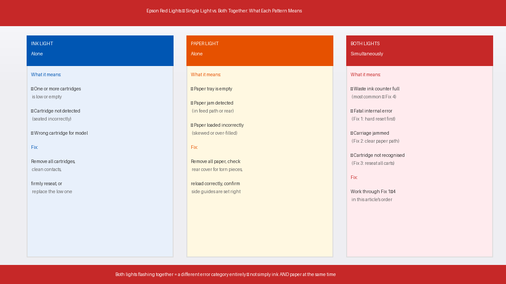
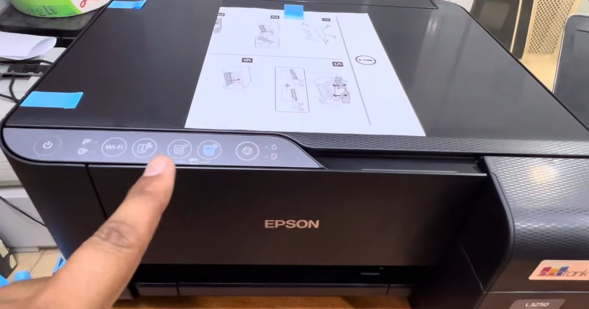
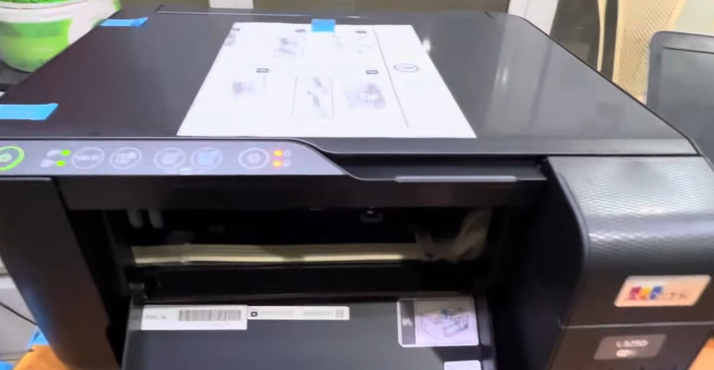
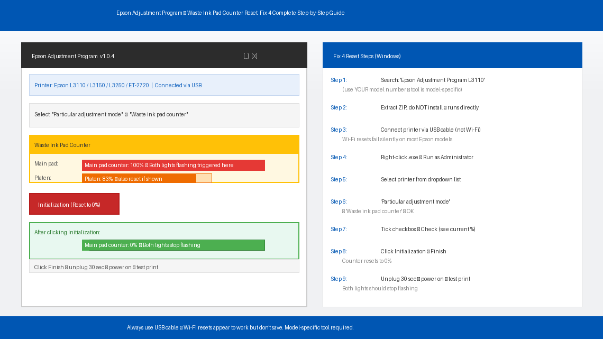
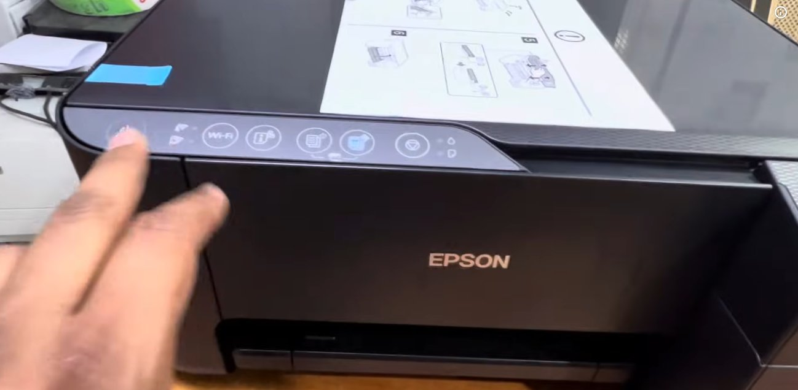

Both Lights Are Flashing. The Paper Tray Is Loaded. Nothing Works.
You send a document to print and walk away to grab a coffee. You come back to find nothing in the output tray, your computer still showing the job as pending, and your Epson printer sitting there with both the ink light and the paper light flashing red at the same time — blinking in unison like a tiny, maddening alarm that has absolutely no intention of stopping on its own.
You check the paper tray. It’s loaded. You check the ink — looks fine. You press every button on the panel. Nothing helps. The lights keep flashing.
The maddening thing about this specific combination — both lights flashing simultaneously — is that it doesn’t mean what either light normally means on its own. It’s not simply a paper jam. It’s not simply low ink. When both flash together, your Epson is communicating something different entirely, and unless you know what that is, you can press buttons and reload paper all day without making any progress.
This guide explains exactly what the combined flashing means, why it happens, and how to fix it — starting with the fastest solutions first.
What Does Both Red Lights Flashing Simultaneously Mean?
On Epson printers, individual indicator lights mean straightforward things: the paper light alone means a paper problem, the ink light alone means a cartridge problem. But when both the ink light and paper light flash at the same time, Epson uses this combination to signal a completely different category of error — one that neither light represents on its own.
Depending on your Epson model, simultaneous flashing of both lights typically indicates one of the following four causes:

- The waste ink pad counter is full or nearing capacity. Just like Canon, Epson printers have internal sponge pads that absorb excess ink from print head cleaning cycles. Epson tracks usage with an internal counter, and when that counter hits its limit, many models signal it with both lights flashing simultaneously rather than a single dedicated indicator.
- A fatal internal error has occurred. On some Epson models — particularly older L-series and Expression series printers — simultaneous flashing indicates the printer’s firmware has encountered an error it cannot resolve on its own. This is often triggered by a failed print head cleaning cycle, an interrupted firmware update, or a sustained paper jam that the printer couldn’t clear cleanly.
- The print head carriage is stuck or obstructed. If the carriage that holds the ink cartridges has jammed mid-movement, some Epson models respond with both lights flashing as a hardware fault indicator rather than a standard paper error.
- A cartridge is not recognised or improperly seated. A refilled cartridge, a third-party cartridge, or a genuine cartridge that has shifted slightly in its slot can cause the printer to throw a combined error rather than the standard single ink light.
In plain English: when both lights flash together, your Epson is telling you it has hit a condition serious enough that it can’t continue — and it needs your attention on something more than just paper or ink alone. The fixes below address each of these causes in order of how commonly they occur.
Tools You’ll Need
Gather these before you start. You may not need everything, but having it all within reach prevents interruptions mid-fix:
- A clean dry cloth or paper towels
- A flashlight or torch
- A USB cable (for the Adjustment Program reset)
- A Windows computer with internet access
- Rubber gloves (if cleaning the waste ink pad)
- A Phillips head screwdriver (only if accessing the waste ink pad)
- About 15–30 minutes of your time
Step-by-Step Fixes (Fastest to Most Involved)
Work through these in order. Most users resolve the simultaneous flashing at Fix 1 or Fix 2 — do not skip ahead until you have confirmed the previous step did not work.
Before anything else, a full power reset is always the correct first move with simultaneous flashing lights. A print job that crashed mid-cycle, a power hiccup during a cleaning operation, or a brief firmware glitch can all lock the printer into a fault state that looks permanent but clears completely with a proper reset.
- Press the Power button to turn the printer off. Wait for all lights to go dark.
- Unplug the printer’s power cord directly from the wall socket — not from the printer end, and do not rely on a power strip switch.
- Wait a full 60 seconds. Epson printers hold residual power in their control board longer than most people expect — 30 seconds is rarely enough.
- While the printer is unplugged, press and hold the Power button on the printer itself for 10 seconds. This discharges any residual current stored in the board’s capacitors, ensuring a true cold reset.
- Plug the power cord back into the wall and power the printer on.
- Watch the lights carefully during startup — if the printer initialises normally and the lights stop flashing, send a test print.
If both lights resume flashing within a minute of startup, continue to Fix 2.

Even when the paper tray looks loaded and clear, a small fragment of torn paper — invisible from the front — can partially obstruct the paper path and trigger a combined error state. Epson’s paper detection sensors are sensitive enough that a piece of paper the size of a postage stamp is sufficient to cause this.
- Unplug the printer.
- Remove all paper from the paper tray completely — don’t just look at it, remove it entirely.
- Open the rear access cover or rear paper guide if your model has one — most Epson printers have a panel on the back that pops open by pressing two side clips. Look inside with your flashlight for any paper, torn fragments, or foreign objects.
- Look inside the front paper slot with your torch and check the full visible length of the paper path. Pay particular attention to the feed roller area — torn pieces frequently wrap around the roller and become invisible from standard viewing angles.
- If you find any paper or debris, remove it very gently with both hands, pulling in the direction of the normal paper path (downward and outward toward the front). Never pull paper backward against the feed direction — this risks damaging the rollers.
- Reload fresh paper into the tray, making sure it is aligned correctly against the side guides, not overfilled past the maximum fill line, and not curled, damp, or stuck together at the edges — fan the stack before loading.
- Plug the printer back in, power it on, and observe.

A cartridge that has been refilled, is third-party, or has simply worked slightly loose from its slot can cause the printer’s ink detection circuit to throw a combined error rather than the standard single ink indicator. This is particularly common after any recent cartridge change.
- Power the printer on so the carriage moves to the cartridge replacement position. On most Epson models, pressing and holding the ink button for 3 seconds moves the carriage to centre.
- Open the cartridge access cover.
- Remove every cartridge — not just the one you think might be the problem. Remove all of them.
- Inspect each cartridge:
- Check that the protective orange or yellow tab was fully removed when the cartridge was first installed. A partial tab left on the ink outlet will prevent proper ink flow and confuse the detection circuit.
- Check the copper contact strip on each cartridge for any ink smears, dust, or fingerprint marks. If the contacts are dirty, wipe them very gently with a dry lint-free cloth. Do not use water or alcohol directly on the contacts.
- Reinsert each cartridge firmly — press down until you hear and feel a distinct click. A cartridge that feels slightly loose after clicking may need to be pressed in two or three times before it seats properly.
- Close the access cover and allow the printer to run through its cartridge detection cycle.
- Test a print.
If the fixes above haven’t resolved the simultaneous flashing, the waste ink pad counter is the most likely remaining cause — particularly on printers that are 3 or more years old or that have been in heavy daily use. Epson uses a free official tool called the Epson Adjustment Program (also referred to as the Epson Reset Utility) to reset this counter — the same tool used by Epson’s authorised service partners.
On Windows:
- Search for “Epson Adjustment Program [your model number]” — for example, “Epson Adjustment Program L3110” or “Epson Adjustment Program ET-2720.” The tool is model-specific, so the correct version matters.
- Download and extract the tool. No installation is required — it runs directly from the extracted folder.
- Connect your Epson printer to your computer via USB cable. The adjustment program is unreliable over Wi-Fi — always use a direct USB connection for this step.
- Ensure the printer is powered on and in its fault state (lights flashing).
- Open the Adjustment Program — right-click the .exe file and select “Run as administrator.”
- Select your printer model from the dropdown menu.
- Select “Particular adjustment mode” from the main menu.
- Choose “Waste ink pad counter” from the list and click OK.
- Tick the checkbox for the main pad counter (and the platen pad counter if shown) and click “Check” to see the current percentage.
- Click “Initialization” to reset the counter to zero.
- Click “Finish,” then close the tool.
- Turn the printer off, unplug it for 30 seconds, plug it back in, and power it on.
- Print a test page — both lights should no longer be flashing.
On Mac: The official Epson Adjustment Program is Windows-only. Mac users can use the Epson Printer Utility built into macOS (System Settings → Printers & Scanners → your printer → Options & Supplies → Utility) for basic diagnostics, or temporarily borrow a Windows PC for the counter reset.

Resetting the counter clears the software lock — but if the physical pad is genuinely saturated, waste ink will continue accumulating and the counter will max out again much sooner than it should. If your printer is several years old and this is not the first time you’ve seen this error, addressing the physical pad now prevents the problem from recurring within weeks.
- Unplug the printer and place it on a protected surface.
- On most Epson inkjet models, the waste ink pad is accessible by removing the bottom casing. Turn the printer upside down carefully and remove the screws holding the bottom panel — typically 3–5 Phillips screws. Keep them in a small dish.
- Lift the bottom panel away. The waste ink pad will be immediately visible — a rectangular block of dark grey or black sponge material sitting in a dedicated tray, heavily stained with ink.
- Lift the pad out carefully and place it directly into a sealed plastic bag.
- Choose your approach:
- Rinse and reuse: Run warm water through the pad, squeezing gently, until the water runs clear. Allow the pad to dry on paper towels for a minimum of 48 hours. Do not reinstall it damp under any circumstances — wet foam inside the printer will wick ink onto the circuit board.
- Replace with new: Generic replacement pads for most Epson models are available online for approximately ₹100–₹350 (India) or $4–$12 (US). Replacement pads can be trimmed to size if needed.
- Reinstall the dry or new pad, reassemble the bottom casing, and tighten all screws.
- Perform Fix 4 (software counter reset) after replacing the physical pad — replacing the pad without resetting the counter will leave the printer still believing it is full.

When to Call a Professional
The simultaneous flashing error on Epson printers is one of the more manageable faults to resolve at home, but there are situations where further DIY troubleshooting is not productive:
- The lights begin flashing again immediately after a successful counter reset — before printing even a single page. This indicates the counter reset did not save to the printer’s memory correctly, which can point to a faulty EEPROM chip on the control board. This is a board-level repair.
- The carriage is visibly stuck and will not move even after a full power reset and clearing the paper path. A jammed or broken carriage belt requires hands-on mechanical repair that is beyond standard home troubleshooting.
- Waste ink is visibly leaking from the bottom of the printer or pooling on the surface beneath it. Stop using the printer immediately and unplug it — ink that has reached the circuit board may have already caused permanent damage. A technician can assess whether the board is salvageable.
- The flashing pattern is different from what this article describes — for example, lights alternating rather than flashing together, or a specific number of flashes followed by a pause. Epson uses flash count sequences to signal specific error codes on certain models. Count the flashes carefully and look up the exact sequence for your model on Epson’s official support pages.
- Your printer is within Epson’s warranty period. Epson’s standard warranty is 1 year from purchase on most consumer models. Opening the printer body or modifying the waste pad may affect your warranty coverage — contact Epson support first if the printer is relatively new.
Epson support in India: epson.co.in/support or call 1800-123-001600 (Monday to Saturday).
In the US: epson.com/support or call 1-800-463-7766.
Have your printer model number and purchase date ready when you call.
Quick Summary
| Fix | Difficulty | Time Needed |
|---|---|---|
| Hard power reset (discharge capacitors) | Very Easy | 2 minutes |
| Clear all paper paths and reload paper | Easy | 10 minutes |
| Remove, clean, and reseat all cartridges | Easy | 10 minutes |
| Reset waste ink counter via Adjustment Program | Easy | 15 minutes |
| Clean or replace the physical waste ink pad | Moderate | 30 min + 48hr drying |
Start at the top. The hard reset alone fixes the simultaneous flashing for a meaningful number of users — especially when the error appeared mid-print rather than at startup. Work your way down calmly and methodically, and you will almost certainly have your Epson printing again before you need to involve a technician.
Sorted your Epson with one of these steps? Fix 4 combined with Fix 5 is the complete solution — reset the counter and replace the pad while you’re in there. Doing both at the same time means you won’t be back troubleshooting this same error again for years.